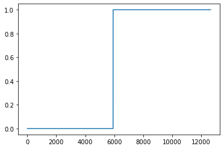
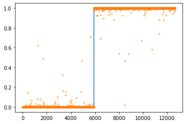

import torch
import torchvision
from fastai.data.all import *
import matplotlib.pyplot as plt기계학습 특강 (6주차) 10월5일 Homework
imports
숙제 (해설 및 풀이는 여기참고)
- 숫자0과 숫자1을 구분하는 네트워크를 아래와 같은 구조로 설계하라
\[\underset{(n,784)}{\bf X} \overset{l_1}{\to} \underset{(n,64)}{\boldsymbol u^{(1)}} \overset{a_1}{\to} \underset{(n,64)}{\boldsymbol v^{(1)}} \overset{l_1}{\to} \underset{(n,1)}{\boldsymbol u^{(2)}} \overset{a_2}{\to} \underset{(n,1)}{\boldsymbol v^{(2)}}=\underset{(n,1)}{\hat{\boldsymbol y}}\]
위에서 \(a_1\)은 relu를, \(a_2\)는 sigmoid를 의미한다.
- “y=0”은 숫자0을 의미하도록 하고 “y=1”은 숫자1을 의미하도록 설정하라.
path = untar_data(URLs.MNIST)zero_fnames = (path/'training/0').ls()one_fnames = (path/'training/1').ls()X0 = torch.stack([torchvision.io.read_image(str(zf)) for zf in zero_fnames])X1 = torch.stack([torchvision.io.read_image(str(of)) for of in one_fnames])X = torch.concat([X0,X1],axis=0).reshape(-1,1*28*28).float()y = torch.tensor([0.0]*len(X0) + [1.0]*len(X1)).reshape(-1,1)torch.manual_seed(12345)
net = torch.nn.Sequential(
torch.nn.Linear(784,64),
torch.nn.ReLU(),
torch.nn.Linear(64,1),
torch.nn.Sigmoid()
)- 아래의 지침에 따라 200 epoch 학습을 진행하라.
- 손실함수는 BECLoss를 이용할 것. torch.nn.BCELoss() 를 이용할 것.
- 옵티마이저는 아담으로 설정할 것. 학습률은 lr=0.002로 설정할 것.
loss_fn = torch.nn.BCELoss()
optimizr = torch.optim.Adam(net.parameters(),lr=0.002)for epoc in range(200):
yhat = net(X)
loss = loss_fn(yhat,y)
loss.backward()
optimizr.step()
optimizr.zero_grad()plt.plot(y)
plt.plot(yhat.data,'.',alpha=0.4)
- 아래의 지침에 따라 200 epoch 학습을 진행하라. 학습이 잘 되는가?
- 손실함수는 BECLoss를 이용할 것. torch.nn.BCELoss()를 사용하지 않고 수식을 직접 입력할 것.
- 옵티마이저는 아담으로 설정할 것. 학습률은 lr=0.002로 설정할 것.
torch.manual_seed(12345)
net = torch.nn.Sequential(
torch.nn.Linear(784,64),
torch.nn.ReLU(),
torch.nn.Linear(64,1),
torch.nn.Sigmoid()
)optimizr = torch.optim.Adam(net.parameters(),lr=0.002)for epoc in range(200):
yhat = net(X)
loss = -torch.mean(y*torch.log(yhat) + (1-y)*torch.log(1-yhat))
loss.backward()
optimizr.step()
optimizr.zero_grad()plt.plot(y)
plt.plot(yhat.data,'.',alpha=0.4)
yhat.datatensor([[nan],
[nan],
[nan],
...,
[nan],
[nan],
[nan]])학습이 잘 되지 않았다.
- 아래의 지침에 따라 200 epoch 학습을 진행하라. 학습이 잘 되는가?
- 이미지의 값을 0과 1사이로 규격화 하라. (Xnp = Xnp/255 를 이용하세요!)
- 손실함수는 BECLoss를 이용할 것. torch.nn.BCELoss()를 사용하지 않고 수식을 직접 입력할 것.
- 옵티마이저는 아담으로 설정할 것. 학습률은 lr=0.002로 설정할 것.
X = X/255torch.manual_seed(12345)
net = torch.nn.Sequential(
torch.nn.Linear(784,64),
torch.nn.ReLU(),
torch.nn.Linear(64,1),
torch.nn.Sigmoid()
)optimizr=torch.optim.Adam(net.parameters(),lr=0.002)for epoc in range(200):
yhat = net(X)
loss = -torch.mean(y*torch.log(yhat) + (1-y)*torch.log(1-yhat))
loss.backward()
optimizr.step()
optimizr.zero_grad()plt.plot(y)
plt.plot(yhat.data,'.',alpha=0.4)
- 아래와 같은 수식을 이용하여 accuracy를 계산하라.
\(\text{accuracy}=\frac{1}{n}\sum_{i=1}^n I(\tilde{y}_i=y_i)\) - \(\tilde{y}_i = \begin{cases} 1 & \hat{y}_i > 0.5 \\ 0 & \hat{y}_i \leq 0.5 \end{cases}\) - \(I(\tilde{y}_i=y_i) = \begin{cases} 1 & \tilde{y}_i=y_i \\ 0 & \tilde{y}_i \neq y_i \end{cases}\)
단, \(n\)은 0과 1을 의미하는 이미지의 수
ytilde = (yhat > 0.5) * 1ytildetensor([[0],
[0],
[0],
...,
[1],
[1],
[1]])(ytilde == y) * 1tensor([[1],
[1],
[1],
...,
[1],
[1],
[1]])torch.sum((ytilde == y) * 1)tensor(12661)torch.sum((ytilde == y) * 1)/len(y)tensor(0.9997)print("accuraccy: ",torch.sum((ytilde == y) * 1)/len(y))accuraccy: tensor(0.9997)